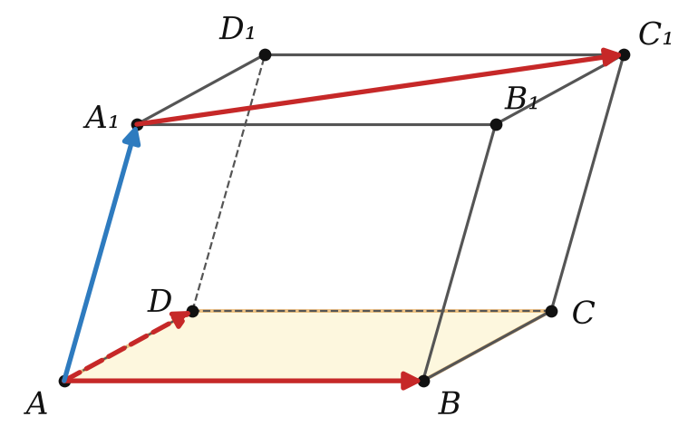
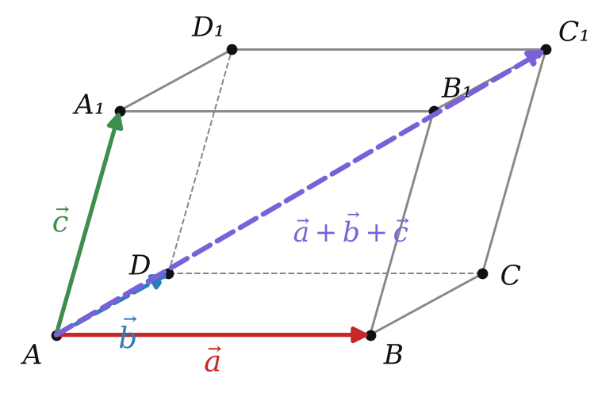
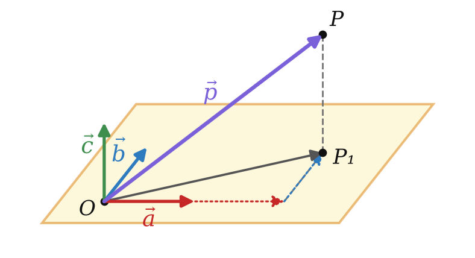
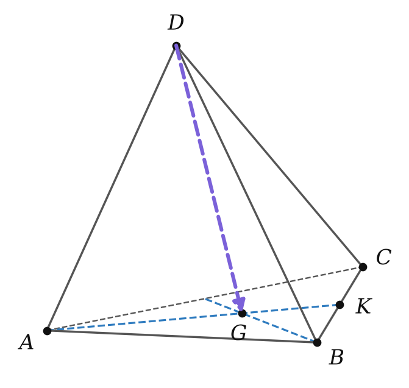

правило параллелепипеда и разложение вектора
AB, AD, A₁C₁ — да; AB, AD, AA₁ — нет.

Три ребра из вершины → диагональ из той же вершины.


| вершина | из A | вершина | из A |
|---|---|---|---|
| B | a | A₁ | c |
| D | b | B₁ | a + c |
| C | a + b | D₁ | b + c |
| C₁ | a + b + c |
XY = AY − AX
